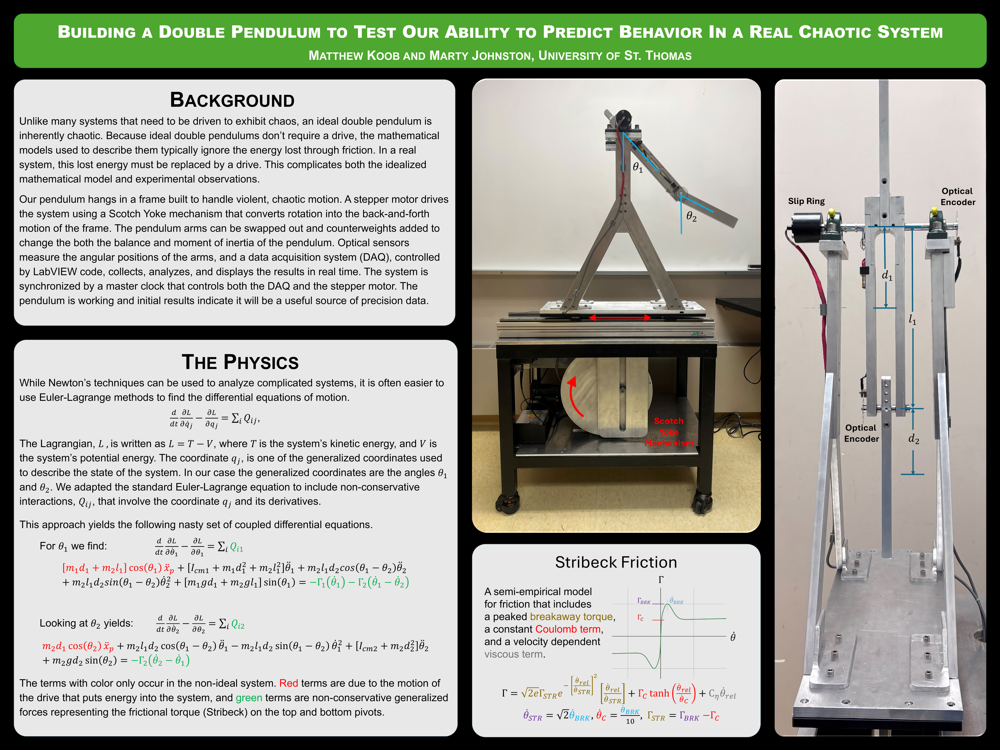

Driven double pendulum experimental system in operation.
Designed and built a driven double pendulum system for experimental study of nonlinear motion and chaos. The system uses a stepper-motor-driven Scotch yoke mechanism to create controlled horizontal motion, while optical encoders measure the angular positions of the pendulum arms.
Tools: Mechanical design, machining, CAD, basic electronics, LabVIEW, Python, data acquisition, analytical dynamics

Generated CAM toolpaths and machined components for a pneumatic air motor using CNC milling, followed by assembly and functional testing.
Tools: CAM (Fusion 360), CNC milling, manual machining, mechanical assembly
Worked with a small team to design and build a hydraulic robot arm for teaching mechanical advantage, fluid power, and linkage-driven motion to grade-school students.

Tools: Mechanical design, prototyping, manual fabrication, basic fluid mechanics
I’m grateful to my teachers and mentors who supported these projects—especially those who provided technical guidance, shop access, and feedback throughout the build process.
Their mentorship and kindness have been essential in my growth as an engineer.
Email: koob3090@stthomas.edu
LinkedIn: linkedin.com/in/mjkoob